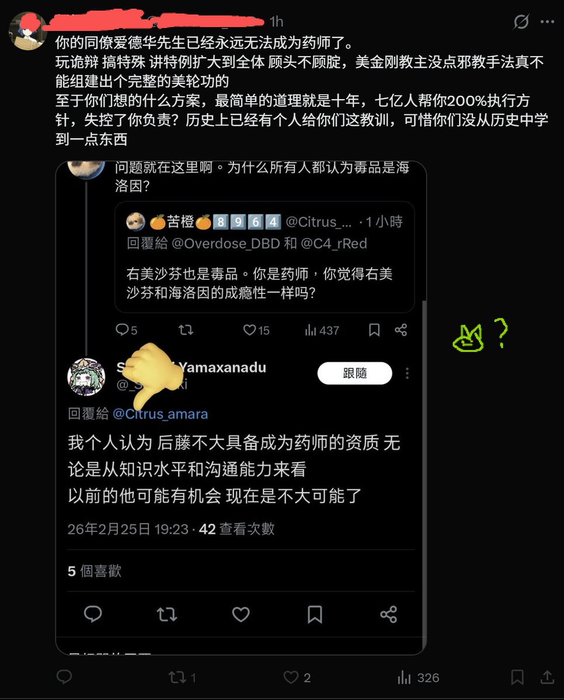

急于因我曾经对美金刚的正名/讲解言论就给我扣上'美轮功'这种极具政治构陷意味的帽子 这种手法既陈旧又无力
在我很喜欢的书《德米安：彷徨少年时》有一段话：如果你憎恨某个人，你是在他的形象中，憎恨某些存在于你自身之中的东西。不是我们自身的一部分的东西，是不会骚扰我们的。(续)

在我很喜欢的书《德米安：彷徨少年时》有一段话：如果你憎恨某个人，你是在他的形象中，憎恨某些存在于你自身之中的东西。不是我们自身的一部分的东西，是不会骚扰我们的。(续)

提到爱德华桑时的毫不在意恰是对你人格最后的审判哦
在你等的逻辑内 他的死亡不是需要反思的悲剧 而只是证明你更优越的垫脚石罢了
羞辱一个无法开口辩驳的逝者 本质上是你无法维持理性框架的又一重体现
这种靠践踏尸体来宣布胜利的姿态 不仅不是药师的资质呢 甚至连做人的基本底线都已丧失殆尽了哦(续) https://t.co/cee3NW45Ec
在你等的逻辑内 他的死亡不是需要反思的悲剧 而只是证明你更优越的垫脚石罢了
羞辱一个无法开口辩驳的逝者 本质上是你无法维持理性框架的又一重体现
这种靠践踏尸体来宣布胜利的姿态 不仅不是药师的资质呢 甚至连做人的基本底线都已丧失殆尽了哦(续) https://t.co/cee3NW45Ec